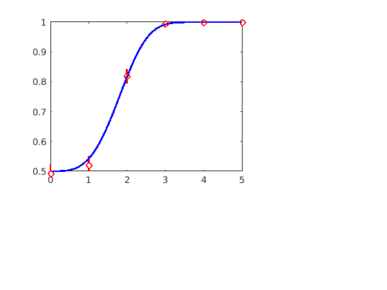
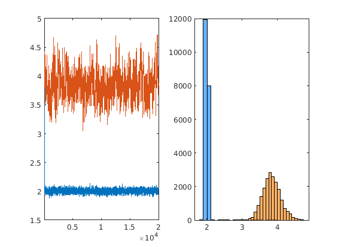
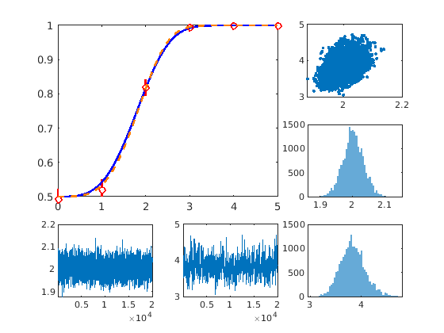

Markov Chain Monte Carlo
Certainly the most popular Monte Carlo algorithm is Markov chain Monte Carlo (MCMC). MCMC is a method of drawing samples from a gradually changing distribution. At each point, the distribution isn't quite right, but over many samples it is. There are many variations on MCMC. We will focus on a simple one called Metropolis sampling.
Contents
Likelihood functions
Throughout, the distribution from which we want to sample will be a probability distribution over some unknown quantity. We want to know, for example, the probability that some X is greater than 0.
Metropolis
Markov Chain Monte Carlo (MCMC) simulation
clear
close all
rng(1)
Simulate some psychometric data
truth = [2, 3.5]; fprintf(' > truth: (%.1f, %.1f)\n', truth) pfcn = @(x,p) wblcdf(x,p(1),p(2)) * 0.5 + 0.5; N = 1000; stimuli = 0:5; prob = pfcn(stimuli, truth); correct = binornd(N, prob); rate = correct/N; se = sqrt((rate .* (1 - rate))./N); xax = linspace(0, 5, 101); yax = pfcn(xax, truth); subplot(3, 3, [1:2 4:5]) plot(xax, yax, 'b-', ... stimuli, rate, 'ro', ... 'linewidth', 2, ... 'clipping', 'off', ... 'markerfacecolor', 'w') ylim([.5 1]) line([stimuli; stimuli], rate + 1.96 * [se; -se], -[correct; correct], ... 'linew', 2, 'color', 'r') f1 = gcf();
> truth: (2.0, 3.5)
Set up likelihood, prior, and posterior
logbinopdf = @(c,n,p) log(binopdf(c,n,p)); loglikelihood = @(x) sum(logbinopdf(correct, N, pfcn(stimuli, x))); deviance = @(x) -2 * loglikelihood(x); startingPoint = [4, 4]'; guess = fminsearch(deviance, startingPoint); fprintf(' > guess: (%.1f, %.1f)\n', guess) logprior = @(x) -sum(x); % log of exppdf(x,1) logposterior = @(x) logprior(x) + loglikelihood(x); % without scaling
> guess: (2.0, 3.9)
Markov chain Monte Carlo
proposal = @(x,s) x + randn(2,1) * s; sigma = 0.5; n_iter = 20000; samples = nan(2, n_iter); heights = nan(1, n_iter); cur_h = logposterior(startingPoint); heights(1) = cur_h; samples(:, 1) = startingPoint; tic h = waitbar(0, 'Sampling...'); f2 = figure(); for m = 2:n_iter proposed = proposal(samples(:, m-1), sigma); new_h = logposterior(proposed); if isnan(new_h)||~isreal(new_h), new_h = -Inf; end if new_h > cur_h || log(rand) < min(new_h - cur_h, 0) samples(:, m) = proposed; cur_h = new_h; else samples(:, m) = samples(:, m-1); end sigma = 0.1; heights(m) = cur_h; if ~mod(m,n_iter/50) waitbar(m/n_iter, h) figure(f2); subplot(1,2,1); plot(1:n_iter, samples') xlim([1,n_iter]) drawnow subplot(1,2,2); histogram(samples(1,:), 21, 'FaceColor', [0 .5 1]) hold on histogram(samples(2,:), 21, 'FaceColor', [1 .5 0]) hold off drawnow end end close(h) toc
Elapsed time is 5.873936 seconds.
More figures
figure(f1) A = samples(1,101:end); B = samples(2,101:end); estimate = mean([A(:) B(:)]); post_std = std([A(:) B(:)]); fprintf(' > estimate: (%.1f, %.1f) +/- (%.2f, %.2f)\n', estimate, post_std) subplot(3,3,3), plot(A, B, '.'); subplot(3,3,7), plot(101:n_iter, A); xlim([1 n_iter]) subplot(3,3,8), plot(101:n_iter, B); xlim([1 n_iter]) subplot(3,3,6), histogram(A, 51, 'edgecolor', 'none') subplot(3,3,9), histogram(B, 51, 'edgecolor', 'none') subplot(3, 3, [1:2 4:5]) line(xax, pfcn(xax, estimate), ... 'linestyle', '--', ... 'color', [1 .5 0], ... 'linewidth', 2, ... 'clipping', 'off')
> estimate: (2.0, 3.8) +/- (0.03, 0.24)
Deriving Bayesian credible intervals for model parameters
fprintf(' > Parameter A is between %.2f and %.2f.\n', ... prctile(A, [0.025 0.975]*100)) fprintf(' > Parameter B is between %.2f and %.2f.\n', ... prctile(B, [0.025 0.975]*100))
> Parameter A is between 1.94 and 2.07. > Parameter B is between 3.39 and 4.36.